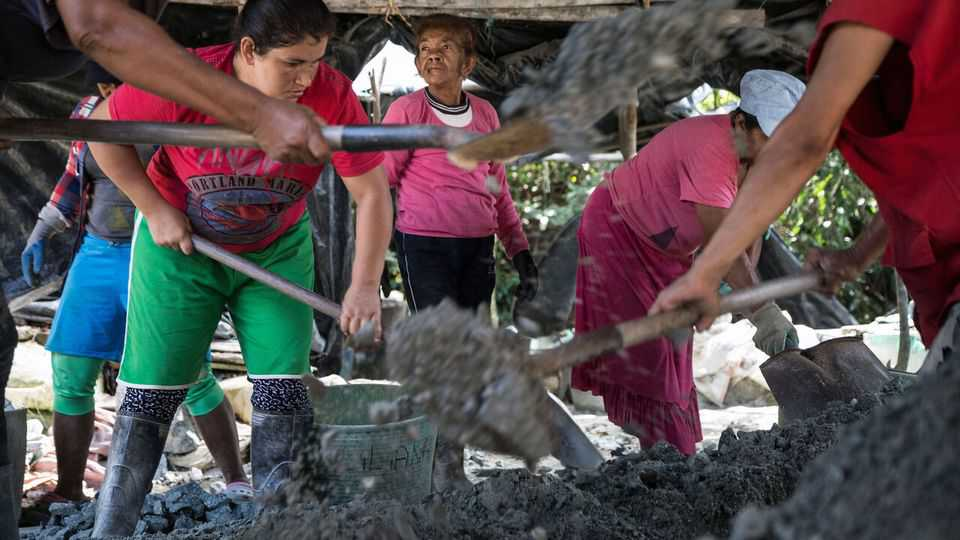

Women lead brutal lives in Colombia’s illegal gold-mining regions
They survive on what men discard, and are exploited by them

Sep 17th 2026
“THE LESS you know, the longer you live.” María lives in Zaragoza, a gold-mining town in the remote, mountainous region of Bajo Cauca, in the Colombian province of Antioquia. Gangsters control her life. Some locals know the identities of members of the armed groups that run the town, primarily the Gulf Clan, Colombia’s most powerful criminal organisation. María prefers not to. Ignorance is a shield against a reality that is hard to stomach.

Residents have long been pawns in the struggle for domination of Bajo Cauca’s natural resources. But the focus has been shifting. The cultivation of coca—the plant used to make cocaine—once underpinned the illicit economy. Today gold mining is the main affair. Surging global demand for the metal, whose price has more than doubled in the past five years (see chart), has transformed Bajo Cauca into a Wild West of illicit extraction. Mining does not just run the economy, but underpins a social order in which armed men control land, machinery and the rules of daily life.
María learned this young, long before the latest gold boom. She left school to work in mining when she was 11. At 14, she left home to live with a man in the hope that it would lead to an easier life. Instead, she was pulled deeper into the mining economy, now with the added burden of keeping house.

The scope for work outside the home is narrow. Becoming a chatarrera (scrap collector) is one option. This involves sorting through piles of mineral waste discarded by miners, and selecting pieces in the hope that they contain traces of gold. Many chatarreras wake up as early as 3am so that they can squeeze in hours of housework before the day’s other labour begins. It often takes over a month to gather enough material to take to the mills, where the women are paid a meagre piece rate.
An older option, panning rivers for gold (pictured), has become much harder. Heavy excavators and dredges have devastated Bajo Cauca’s riverbeds. As a result, gold-panners must cover long distances to find workable sites. They travel by canoe, then continue by foot into remote areas, staying sometimes for months on end. Some mothers manage to leave their children with relatives. Others have no choice but to take children out of school and bring them on the journey. Sexual assault is common. Boys may be forced to join armed groups as child soldiers; girls, to marry older men. María says poverty pushes families to risk these outcomes.
Around the mines, other economies flourish—with a specific place for women. Most mining towns have a brothel. A spectrum spans tolerated sex work through to slavery. María, now in her late 30s, says she was 13 the first time a mine administrator tried to coerce her into sex for money. “This is the kind of violence we experience as women,” she says. It is “normal”.
Normality is dictated, in large part, by Bajo Cauca’s constellation of gangsters and guerrilla groups. “They implement curfews in communities so [people] cannot go out at night or after certain hours,” says Alicia Flórez of Insight Crime, an investigative outfit. “They have conduct manuals that say what you can do and what you cannot do.”
These manuals often compel locals to take part in civil work, such as repairing roads or bridges. The gangsters then cast themselves as providers and protectors. Locals obey, Ms Flórez says, because they know violent reprisal is likely if they don’t.
Keeping up with the gangs’ shifting demands has become convoluted for locals. Miners describe paying a vacuna (vaccination)—an extortion fee levied as a share of their gold earnings—in exchange for protection. Vacunas may once have provided real security, but that is being eroded by competition between different criminal enterprises. Many locals say they pay fees to multiple groups and, in some cases, to Colombian state forces.
The national government is little help. Under the leftist previous president, Gustavo Petro, it passed legislation allowing artisanal miners to practise gold panning, aiming to help people make a legitimate living outside the control of the gangsters. Meanwhile, the army raids illegal mining camps and destroys machinery. But these policies work against each other. Most miners use machines to dig because older methods no longer bring in enough gold. Those machines are almost always controlled by armed groups. Their seizure hurts the miners that the government claims it is trying to help.
María tried to leave. At 35, with the support of a new partner, she returned to education, studying at night and at weekends until she qualified as a teacher for young children. For a brief period, a contract as a social worker for children allowed her to step away from mining, but when it ended Zaragoza presented her with no other options. The gold pulled her back.
Her outlook is bleak. “Political candidates make promises,” she says. “And when a shocking case of violence or mass displacement occurs, people pay attention for a week. They might even march for a day. Then everything goes quiet again.” ■